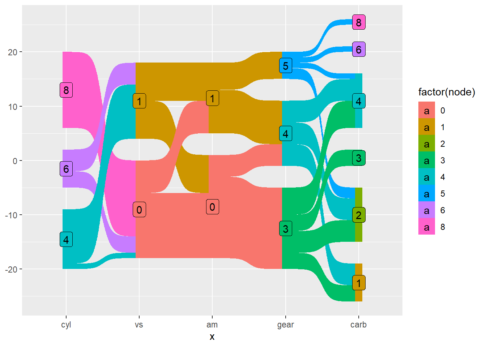

library(tidyr)
library(dplyr)
library(readr)4 Sankey diagrams and how to create
NSC-R Tidy Tuesday March 2022
4.1 Introduction
In this meeting, Tim Verlaan explains what Sankey diagrams are, and how they can be created in R (Verlaan 2022)
4.2 Get started
relig_income# A tibble: 18 x 11
religion `<$10k` $10-2~1 $20-3~2 $30-4~3 $40-5~4 $50-7~5 $75-1~6 $100-~7
<chr> <dbl> <dbl> <dbl> <dbl> <dbl> <dbl> <dbl> <dbl>
1 Agnostic 27 34 60 81 76 137 122 109
2 Atheist 12 27 37 52 35 70 73 59
3 Buddhist 27 21 30 34 33 58 62 39
4 Catholic 418 617 732 670 638 1116 949 792
5 Don’t know/r~ 15 14 15 11 10 35 21 17
6 Evangelical ~ 575 869 1064 982 881 1486 949 723
7 Hindu 1 9 7 9 11 34 47 48
8 Historically~ 228 244 236 238 197 223 131 81
9 Jehovah's Wi~ 20 27 24 24 21 30 15 11
10 Jewish 19 19 25 25 30 95 69 87
11 Mainline Prot 289 495 619 655 651 1107 939 753
12 Mormon 29 40 48 51 56 112 85 49
13 Muslim 6 7 9 10 9 23 16 8
14 Orthodox 13 17 23 32 32 47 38 42
15 Other Christ~ 9 7 11 13 13 14 18 14
16 Other Faiths 20 33 40 46 49 63 46 40
17 Other World ~ 5 2 3 4 2 7 3 4
18 Unaffiliated 217 299 374 365 341 528 407 321
# ... with 2 more variables: `>150k` <dbl>, `Don't know/refused` <dbl>, and
# abbreviated variable names 1: `$10-20k`, 2: `$20-30k`, 3: `$30-40k`,
# 4: `$40-50k`, 5: `$50-75k`, 6: `$75-100k`, 7: `$100-150k`?pivot_longerpivot_longer(relig_income, !religion)# A tibble: 180 x 3
religion name value
<chr> <chr> <dbl>
1 Agnostic <$10k 27
2 Agnostic $10-20k 34
3 Agnostic $20-30k 60
4 Agnostic $30-40k 81
5 Agnostic $40-50k 76
6 Agnostic $50-75k 137
7 Agnostic $75-100k 122
8 Agnostic $100-150k 109
9 Agnostic >150k 84
10 Agnostic Don't know/refused 96
# ... with 170 more rowsdf <- relig_income %>%
pivot_longer(!religion, names_to = 'income', values_to = 'count')billboard# A tibble: 317 x 79
artist track date.ent~1 wk1 wk2 wk3 wk4 wk5 wk6 wk7 wk8 wk9
<chr> <chr> <date> <dbl> <dbl> <dbl> <dbl> <dbl> <dbl> <dbl> <dbl> <dbl>
1 2 Pac Baby~ 2000-02-26 87 82 72 77 87 94 99 NA NA
2 2Ge+h~ The ~ 2000-09-02 91 87 92 NA NA NA NA NA NA
3 3 Doo~ Kryp~ 2000-04-08 81 70 68 67 66 57 54 53 51
4 3 Doo~ Loser 2000-10-21 76 76 72 69 67 65 55 59 62
5 504 B~ Wobb~ 2000-04-15 57 34 25 17 17 31 36 49 53
6 98^0 Give~ 2000-08-19 51 39 34 26 26 19 2 2 3
7 A*Tee~ Danc~ 2000-07-08 97 97 96 95 100 NA NA NA NA
8 Aaliy~ I Do~ 2000-01-29 84 62 51 41 38 35 35 38 38
9 Aaliy~ Try ~ 2000-03-18 59 53 38 28 21 18 16 14 12
10 Adams~ Open~ 2000-08-26 76 76 74 69 68 67 61 58 57
# ... with 307 more rows, 67 more variables: wk10 <dbl>, wk11 <dbl>,
# wk12 <dbl>, wk13 <dbl>, wk14 <dbl>, wk15 <dbl>, wk16 <dbl>, wk17 <dbl>,
# wk18 <dbl>, wk19 <dbl>, wk20 <dbl>, wk21 <dbl>, wk22 <dbl>, wk23 <dbl>,
# wk24 <dbl>, wk25 <dbl>, wk26 <dbl>, wk27 <dbl>, wk28 <dbl>, wk29 <dbl>,
# wk30 <dbl>, wk31 <dbl>, wk32 <dbl>, wk33 <dbl>, wk34 <dbl>, wk35 <dbl>,
# wk36 <dbl>, wk37 <dbl>, wk38 <dbl>, wk39 <dbl>, wk40 <dbl>, wk41 <dbl>,
# wk42 <dbl>, wk43 <dbl>, wk44 <dbl>, wk45 <dbl>, wk46 <dbl>, wk47 <dbl>, ...billboard %>%
pivot_longer(
cols = starts_with('wk'),
values_drop_na = TRUE,
names_to = "week",
values_to = 'rank',
names_prefix = "wk",
names_transform = list(week = as.integer)
)# A tibble: 5,307 x 5
artist track date.entered week rank
<chr> <chr> <date> <int> <dbl>
1 2 Pac Baby Don't Cry (Keep... 2000-02-26 1 87
2 2 Pac Baby Don't Cry (Keep... 2000-02-26 2 82
3 2 Pac Baby Don't Cry (Keep... 2000-02-26 3 72
4 2 Pac Baby Don't Cry (Keep... 2000-02-26 4 77
5 2 Pac Baby Don't Cry (Keep... 2000-02-26 5 87
6 2 Pac Baby Don't Cry (Keep... 2000-02-26 6 94
7 2 Pac Baby Don't Cry (Keep... 2000-02-26 7 99
8 2Ge+her The Hardest Part Of ... 2000-09-02 1 91
9 2Ge+her The Hardest Part Of ... 2000-09-02 2 87
10 2Ge+her The Hardest Part Of ... 2000-09-02 3 92
# ... with 5,297 more rows#install.packages("remotes")
#remotes::install_github("davidsjoberg/ggsankey")
library(ggsankey)
library(ggplot2)?mtcars
df <- mtcars %>%
make_long(cyl, vs, am, gear, carb)ggplot(df, aes(x = x,
node = node,
next_x = next_x,
next_node = next_node,
fill = factor(node),
label = node)) +
geom_sankey() +
geom_sankey_label() 
df1 <- mtcars %>%
select(cyl, vs, am, gear, carb) %>%
pivot_longer(everything()) %>%
mutate(next_x = lead(.data$name),
next_node = lead(.data$value)
)5 References
Verlaan, T. 2022. “NSC-Rn Workshops: NSC-R Tidy Tuesday.” NSCR. https://nscrweb.netlify.app/posts/2022-03-08-nsc-r-tidy-tuesday/.